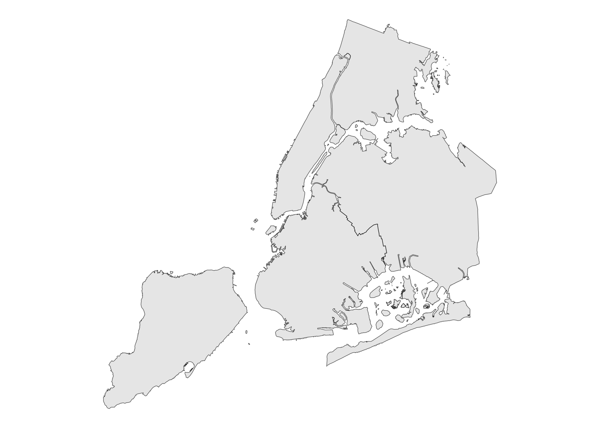
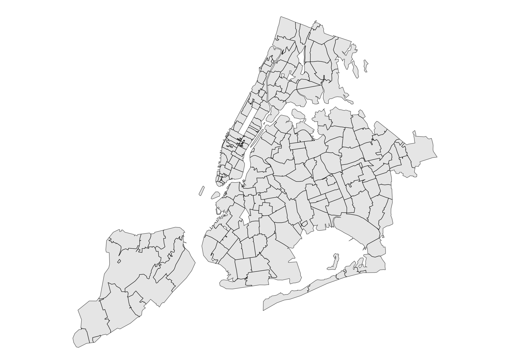
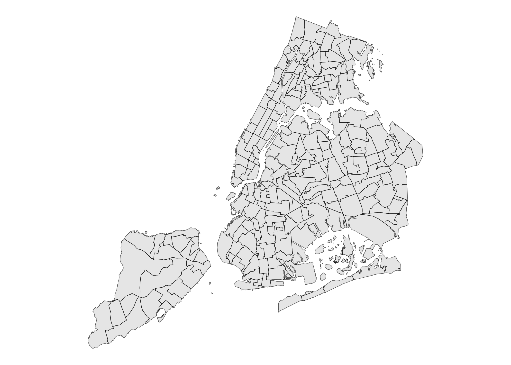
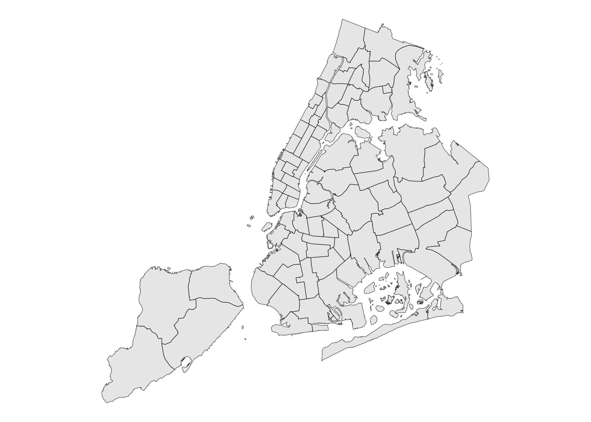
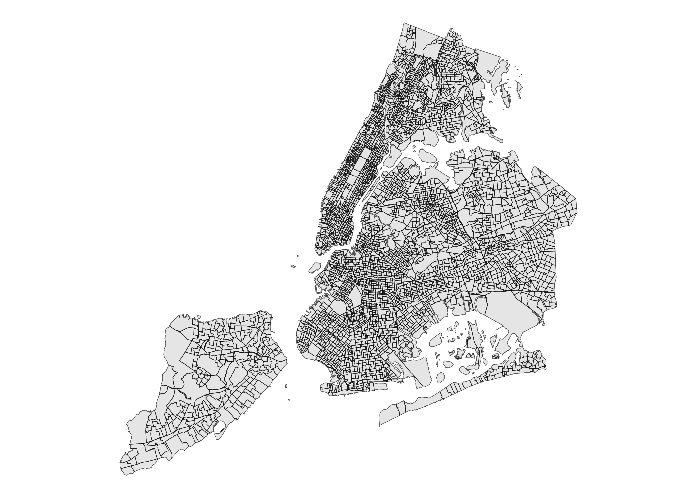
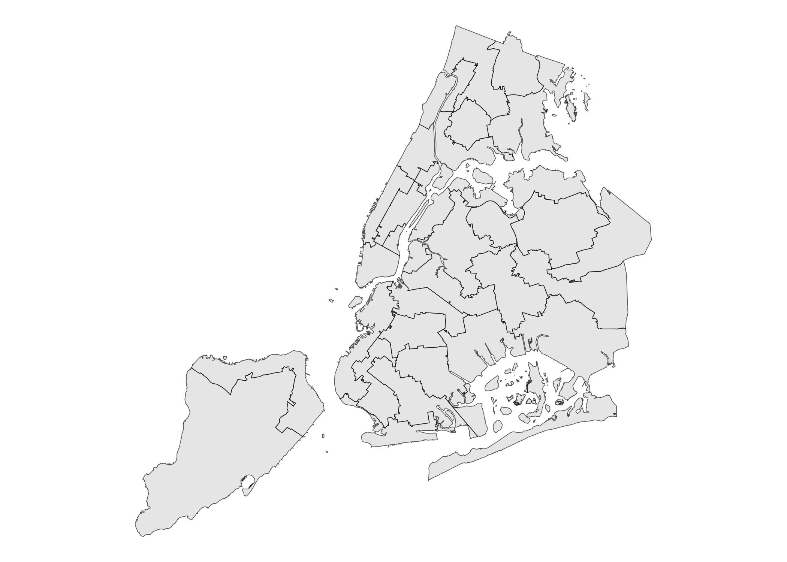
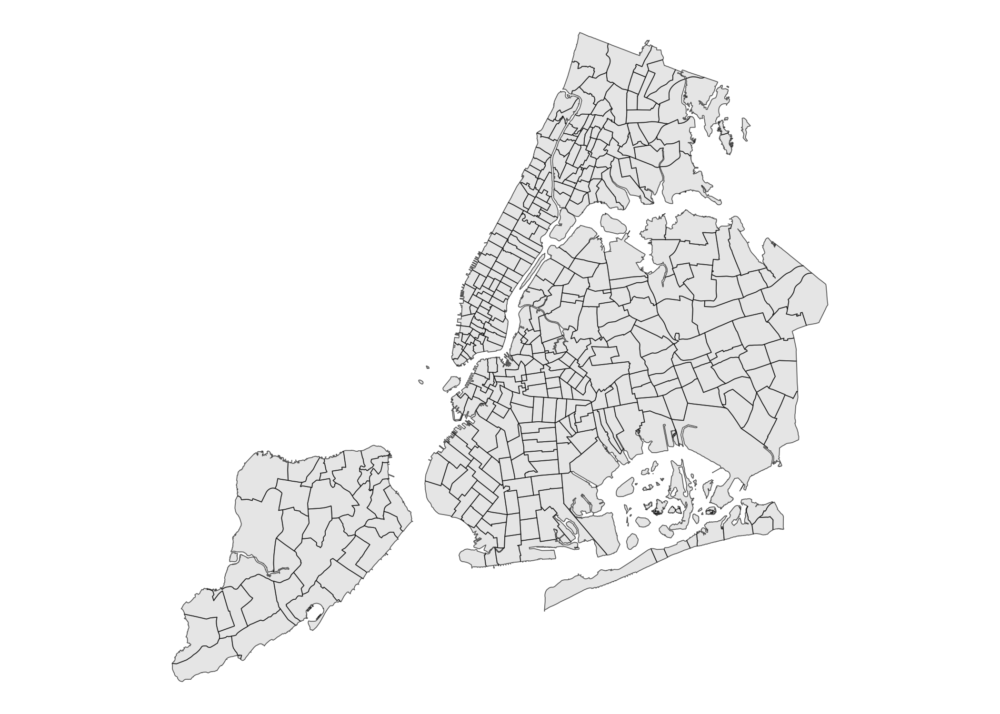
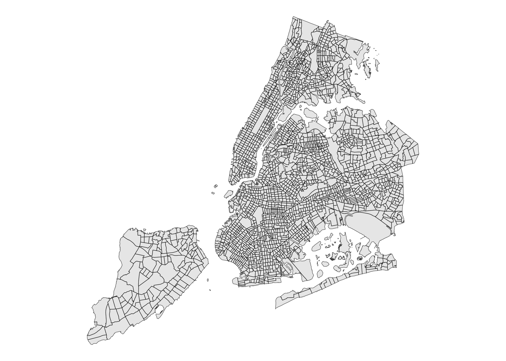
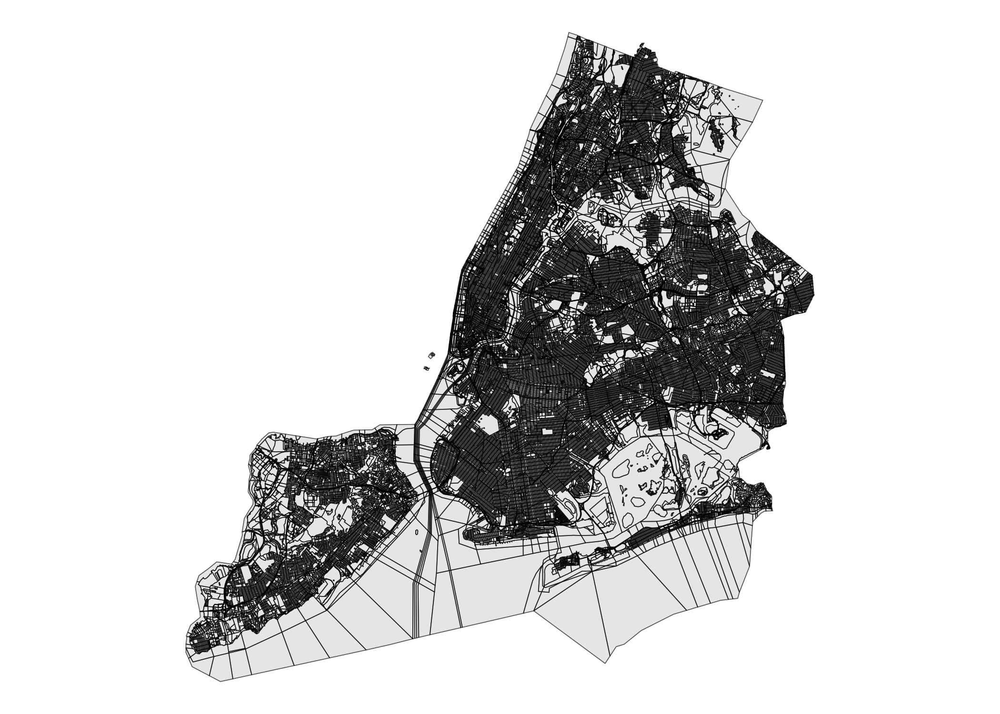
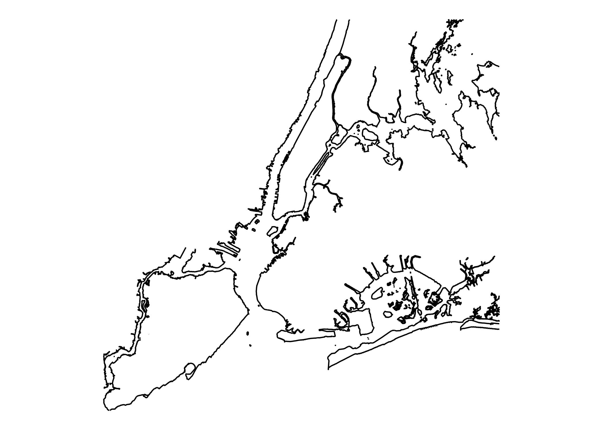

Provides sf objects of various New York City geographies (and associated tibbles of identifiers) for drawing thematic maps.
Installation
You can install the development version of nycmaps with:
remotes::install_github("kjhealy/nycmaps")Load
library(tidyverse)
#> ── Attaching core tidyverse packages ──────────────────────── tidyverse 2.0.0 ──
#> ✔ dplyr 1.2.0 ✔ readr 2.2.0
#> ✔ forcats 1.0.1 ✔ stringr 1.6.0
#> ✔ ggplot2 4.0.2 ✔ tibble 3.3.1
#> ✔ lubridate 1.9.5 ✔ tidyr 1.3.2
#> ✔ purrr 1.2.1
#> ── Conflicts ────────────────────────────────────────── tidyverse_conflicts() ──
#> ✖ dplyr::filter() masks stats::filter()
#> ✖ dplyr::lag() masks stats::lag()
#> ℹ Use the conflicted package (<http://conflicted.r-lib.org/>) to force all conflicts to become errors
library(sf)
#> Linking to GEOS 3.13.0, GDAL 3.8.5, PROJ 9.5.1; sf_use_s2() is TRUE
library(nycmaps)What’s included
Borough Boundaries
nyc_boros
#> # A tibble: 5 × 5
#> boro_code boro_name county_name short_county_name long_county_name
#> <dbl> <chr> <chr> <chr> <chr>
#> 1 1 Manhattan New York County New York New York County, Ne…
#> 2 2 Bronx Bronx County Bronx Bronx County, New Y…
#> 3 3 Brooklyn Kings County Kings Kings County, New Y…
#> 4 4 Queens Queens County Queens Queens County, New …
#> 5 5 Staten Island Richmond County Richmond Richmond County, Ne…
nyc_boros_sf
#> Simple feature collection with 5 features and 4 fields
#> Geometry type: MULTIPOLYGON
#> Dimension: XY
#> Bounding box: xmin: 913175.1 ymin: 120128.4 xmax: 1067383 ymax: 272844.3
#> Projected CRS: NAD83 / New York Long Island (ftUS)
#> boro_code boro_name shape_leng shape_area geometry
#> 1 5 Staten Island 325912.3 1623618358 MULTIPOLYGON (((970217 1456...
#> 2 2 Bronx 463147.1 1187199300 MULTIPOLYGON (((1012822 229...
#> 3 3 Brooklyn 726953.0 1934462608 MULTIPOLYGON (((1022227 152...
#> 4 4 Queens 887905.1 3041419184 MULTIPOLYGON (((1032452 154...
#> 5 1 Manhattan 359193.9 636627850 MULTIPOLYGON (((981219.1 18...
ggplot(nyc_boros_sf) +
geom_sf() +
theme_void()
Zip Codes (ZCTAs)
nyc_zips
#> # A tibble: 255 × 7
#> zip boro_name city_name county_name long_county_name short_county_name
#> <chr> <chr> <chr> <chr> <chr> <chr>
#> 1 10001 Manhattan New York New York County New York County,… New York
#> 2 10002 Manhattan New York New York County New York County,… New York
#> 3 10003 Manhattan New York New York County New York County,… New York
#> 4 10004 Manhattan New York New York County New York County,… New York
#> 5 10005 Manhattan New York New York County New York County,… New York
#> 6 10006 Manhattan New York New York County New York County,… New York
#> 7 10007 Manhattan New York New York County New York County,… New York
#> 8 10009 Manhattan New York New York County New York County,… New York
#> 9 10010 Manhattan New York New York County New York County,… New York
#> 10 10011 Manhattan New York New York County New York County,… New York
#> # ℹ 245 more rows
#> # ℹ 1 more variable: po_name <chr>
nyc_zip_sf
#> Simple feature collection with 212 features and 3 fields
#> Geometry type: MULTIPOLYGON
#> Dimension: XY
#> Bounding box: xmin: 913037.2 ymin: 120117 xmax: 1080968 ymax: 272752.9
#> Projected CRS: NAD83 / New York Long Island (ftUS)
#> First 10 features:
#> zip zip_name pop geometry
#> 1 11219 ZCTA5 11219 89371 MULTIPOLYGON (((980724.2 16...
#> 2 10021 ZCTA5 10021 44280 MULTIPOLYGON (((995535.5 21...
#> 3 10044 ZCTA5 10044 12440 MULTIPOLYGON (((994893 2124...
#> 4 11213 ZCTA5 11213 67056 MULTIPOLYGON (((998725.8 18...
#> 5 11424 ZCTA5 11424 0 MULTIPOLYGON (((1031105 199...
#> 6 10005 ZCTA5 10005 8701 MULTIPOLYGON (((980782.1 19...
#> 7 10311 ZCTA5 10311 0 MULTIPOLYGON (((934108.9 16...
#> 8 10280 ZCTA5 10280 9496 MULTIPOLYGON (((978847.6 19...
#> 9 11365 ZCTA5 11365 44738 MULTIPOLYGON (((1035744 211...
#> 10 11205 ZCTA5 11205 46843 MULTIPOLYGON (((989733.3 19...Notice that we have more zip codes in nyc_zips than zctas in nyc_zip_sf. Several of these zip codes are for PO Boxes or otherwise non-residential (like LGA and Fort Totten Park).
nyc_zip_sf |>
filter(pop == 0)
#> Simple feature collection with 28 features and 3 fields
#> Geometry type: MULTIPOLYGON
#> Dimension: XY
#> Bounding box: xmin: 933583.6 ymin: 158990.6 xmax: 1047859 ymax: 234868.9
#> Projected CRS: NAD83 / New York Long Island (ftUS)
#> First 10 features:
#> zip zip_name pop geometry
#> 1 11424 ZCTA5 11424 0 MULTIPOLYGON (((1031105 199...
#> 2 10311 ZCTA5 10311 0 MULTIPOLYGON (((934108.9 16...
#> 3 10170 ZCTA5 10170 0 MULTIPOLYGON (((990592.8 21...
#> 4 11451 ZCTA5 11451 0 MULTIPOLYGON (((1040787 195...
#> 5 11359 ZCTA5 11359 0 MULTIPOLYGON (((1044826 227...
#> 6 10167 ZCTA5 10167 0 MULTIPOLYGON (((991078.7 21...
#> 7 10153 ZCTA5 10153 0 MULTIPOLYGON (((991725.2 21...
#> 8 10177 ZCTA5 10177 0 MULTIPOLYGON (((990756.3 21...
#> 9 10111 ZCTA5 10111 0 MULTIPOLYGON (((990220.1 21...
#> 10 10152 ZCTA5 10152 0 MULTIPOLYGON (((991837.2 21...
ggplot(nyc_zip_sf) +
geom_sf() +
theme_void()
Neighborhood Tabulation Areas
NTA 2010
nyc_nta10_sf
#> Simple feature collection with 195 features and 7 fields
#> Geometry type: MULTIPOLYGON
#> Dimension: XY
#> Bounding box: xmin: 913175.1 ymin: 120128.4 xmax: 1067383 ymax: 272844.3
#> Projected CRS: NAD83 / New York Long Island (ftUS)
#> First 10 features:
#> boro_code boro_name county_fips nta_code
#> 1 4 Queens 081 QN08
#> 2 2 Bronx 005 BX41
#> 3 4 Queens 081 QN52
#> 4 3 Brooklyn 047 BK44
#> 5 3 Brooklyn 047 BK41
#> 6 4 Queens 081 QN33
#> 7 4 Queens 081 QN44
#> 8 4 Queens 081 QN62
#> 9 5 Staten Island 085 SI11
#> 10 3 Brooklyn 047 BK91
#> nta_name shape_leng shape_area
#> 1 St. Albans 45401.32 77412748
#> 2 Mount Hope 18937.25 14716711
#> 3 East Flushing 25848.55 29453684
#> 4 Madison 26237.26 27379162
#> 5 Kensington-Ocean Parkway 20800.75 15893334
#> 6 Cambria Heights 26168.46 33076727
#> 7 Glen Oaks-Floral Park-New Hyde Park 33597.01 45658769
#> 8 Queensboro Hill 30690.30 26541931
#> 9 Charleston-Richmond Valley-Tottenville 84983.55 145534202
#> 10 East Flatbush-Farragut 39191.18 34360313
#> geometry
#> 1 MULTIPOLYGON (((1052996 196...
#> 2 MULTIPOLYGON (((1013129 250...
#> 3 MULTIPOLYGON (((1041062 215...
#> 4 MULTIPOLYGON (((1001593 160...
#> 5 MULTIPOLYGON (((992341.7 17...
#> 6 MULTIPOLYGON (((1060006 195...
#> 7 MULTIPOLYGON (((1064490 204...
#> 8 MULTIPOLYGON (((1035407 211...
#> 9 MULTIPOLYGON (((926730.6 14...
#> 10 MULTIPOLYGON (((1004850 172...
ggplot(nyc_nta10_sf) +
geom_sf() +
theme_void()
NTA 2020
nyc_nta20_sf
#> Simple feature collection with 262 features and 11 fields
#> Geometry type: MULTIPOLYGON
#> Dimension: XY
#> Bounding box: xmin: 913175.1 ymin: 120128.4 xmax: 1067383 ymax: 272844.3
#> Projected CRS: NAD83 / New York Long Island (ftUS)
#> First 10 features:
#> boro_code boro_name county_fips nta2020 nta_name
#> 1 3 Brooklyn 047 BK0101 Greenpoint
#> 2 3 Brooklyn 047 BK0102 Williamsburg
#> 3 3 Brooklyn 047 BK0103 South Williamsburg
#> 4 3 Brooklyn 047 BK0104 East Williamsburg
#> 5 3 Brooklyn 047 BK0201 Brooklyn Heights
#> 6 3 Brooklyn 047 BK0202 Downtown Brooklyn-DUMBO-Boerum Hill
#> 7 3 Brooklyn 047 BK0203 Fort Greene
#> 8 3 Brooklyn 047 BK0204 Clinton Hill
#> 9 3 Brooklyn 047 BK0261 Brooklyn Navy Yard
#> 10 3 Brooklyn 047 BK0301 Bedford-Stuyvesant (West)
#> nta_abbrev nta_type cdta2020
#> 1 Grnpt 0 BK01
#> 2 Wllmsbrg 0 BK01
#> 3 SWllmsbrg 0 BK01
#> 4 EWllmsbrg 0 BK01
#> 5 BkHts 0 BK02
#> 6 DwntwnBk 0 BK02
#> 7 FtGrn 0 BK02
#> 8 ClntnHl 0 BK02
#> 9 BkNvyYrd 6 BK02
#> 10 BdSty_W 0 BK03
#> cdta_name shape_leng
#> 1 BK01 Williamsburg-Greenpoint (CD 1 Equivalent) 28919.56
#> 2 BK01 Williamsburg-Greenpoint (CD 1 Equivalent) 28134.08
#> 3 BK01 Williamsburg-Greenpoint (CD 1 Equivalent) 18250.28
#> 4 BK01 Williamsburg-Greenpoint (CD 1 Equivalent) 43184.80
#> 5 BK02 Downtown Brooklyn-Fort Greene (CD 2 Approximation) 14312.19
#> 6 BK02 Downtown Brooklyn-Fort Greene (CD 2 Approximation) 30589.24
#> 7 BK02 Downtown Brooklyn-Fort Greene (CD 2 Approximation) 23284.59
#> 8 BK02 Downtown Brooklyn-Fort Greene (CD 2 Approximation) 18102.97
#> 9 BK02 Downtown Brooklyn-Fort Greene (CD 2 Approximation) 39415.64
#> 10 BK03 Bedford-Stuyvesant (CD 3 Approximation) 26307.65
#> shape_area geometry
#> 1 35321809 MULTIPOLYGON (((1003060 204...
#> 2 28852853 MULTIPOLYGON (((995851.9 20...
#> 3 15208961 MULTIPOLYGON (((998047.2 19...
#> 4 52267408 MULTIPOLYGON (((1005302 199...
#> 5 9982023 MULTIPOLYGON (((986367.7 19...
#> 6 23731597 MULTIPOLYGON (((990056.4 19...
#> 7 17533714 MULTIPOLYGON (((994554.2 19...
#> 8 14566585 MULTIPOLYGON (((994971 1871...
#> 9 10106807 MULTIPOLYGON (((990092 1964...
#> 10 36906699 MULTIPOLYGON (((999743.6 18...
ggplot(nyc_nta20_sf) +
geom_sf() +
theme_void()Community District Tabulation Areas (CDTAs) 2020
nyc_cdtas_2020_sf
#> Simple feature collection with 71 features and 8 fields
#> Geometry type: MULTIPOLYGON
#> Dimension: XY
#> Bounding box: xmin: 913175.1 ymin: 120128.4 xmax: 1067383 ymax: 272844.3
#> Projected CRS: NAD83 / New York Long Island (ftUS)
#> First 10 features:
#> boro_code boro_name county_fips cdta2020
#> 1 3 Brooklyn 047 BK01
#> 2 3 Brooklyn 047 BK02
#> 3 3 Brooklyn 047 BK03
#> 4 3 Brooklyn 047 BK04
#> 5 3 Brooklyn 047 BK05
#> 6 3 Brooklyn 047 BK06
#> 7 3 Brooklyn 047 BK07
#> 8 3 Brooklyn 047 BK08
#> 9 3 Brooklyn 047 BK09
#> 10 3 Brooklyn 047 BK10
#> cdta_name cdta_type shape_leng
#> 1 BK01 Williamsburg-Greenpoint (CD 1 Equivalent) 0 65640.60
#> 2 BK02 Downtown Brooklyn-Fort Greene (CD 2 Approximation) 0 65273.41
#> 3 BK03 Bedford-Stuyvesant (CD 3 Approximation) 0 37550.86
#> 4 BK04 Bushwick (CD 4 Equivalent) 0 36980.75
#> 5 BK05 East New York-Cypress Hills (CD 5 Approximation) 0 78801.48
#> 6 BK06 Park Slope-Carroll Gardens (CD 6 Approximation) 0 77387.93
#> 7 BK07 Sunset Park-Windsor Terrace (CD 7 Approximation) 0 93904.89
#> 8 BK08 Crown Heights (North) (CD 8 Approximation) 0 38333.71
#> 9 BK09 Crown Heights (South) (CD 9 Approximation) 0 32244.39
#> 10 BK10 Bay Ridge-Dyker Heights (CD 10 Approximation) 0 47837.04
#> shape_area geometry
#> 1 131651031 MULTIPOLYGON (((1005302 199...
#> 2 75920725 MULTIPOLYGON (((992763.6 19...
#> 3 78196400 MULTIPOLYGON (((1006979 189...
#> 4 56653765 MULTIPOLYGON (((1012949 187...
#> 5 165460349 MULTIPOLYGON (((1015251 174...
#> 6 86643177 MULTIPOLYGON (((991527.5 18...
#> 7 105547002 MULTIPOLYGON (((989751.2 18...
#> 8 46939593 MULTIPOLYGON (((994971 1871...
#> 9 44093657 MULTIPOLYGON (((1004025 181...
#> 10 109208853 MULTIPOLYGON (((975287.1 17...
ggplot(nyc_cdtas_2020_sf) +
geom_sf() +
theme_void()Police Precincts
nyc_police_precincts_sf
#> Simple feature collection with 78 features and 3 fields
#> Geometry type: MULTIPOLYGON
#> Dimension: XY
#> Bounding box: xmin: 913175.1 ymin: 120128.4 xmax: 1067383 ymax: 272844.3
#> Projected CRS: NAD83 / New York Long Island (ftUS)
#> First 10 features:
#> precinct shape_leng shape_area geometry
#> 1 1 80093.49 47284748 MULTIPOLYGON (((972081.8 19...
#> 2 5 18807.08 18094771 MULTIPOLYGON (((987399.2 20...
#> 3 6 27255.99 22143015 MULTIPOLYGON (((981714 2097...
#> 4 7 17287.66 18366632 MULTIPOLYGON (((991608.1 20...
#> 5 9 19772.51 21395386 MULTIPOLYGON (((992119.1 20...
#> 6 10 40227.21 27265501 MULTIPOLYGON (((983866 2172...
#> 7 13 27719.21 29507656 MULTIPOLYGON (((989359.7 21...
#> 8 14 20973.81 20511123 MULTIPOLYGON (((991274 2137...
#> 9 17 26719.68 22268768 MULTIPOLYGON (((994166.3 21...
#> 10 18 41625.18 32250200 MULTIPOLYGON (((985929.4 22...
ggplot(nyc_police_precincts_sf) +
geom_sf() +
theme_void()
City Council Districts
nyc_city_council_districts_sf
#> Simple feature collection with 51 features and 3 fields
#> Geometry type: MULTIPOLYGON
#> Dimension: XY
#> Bounding box: xmin: 913175.1 ymin: 120128.4 xmax: 1067383 ymax: 272844.3
#> Projected CRS: NAD83 / New York Long Island (ftUS)
#> First 10 features:
#> coun_dist shape_leng shape_area geometry
#> 1 42 220755.07 201334162 MULTIPOLYGON (((1022227 152...
#> 2 45 56967.63 117904762 MULTIPOLYGON (((1005658 176...
#> 3 20 61223.01 144833269 MULTIPOLYGON (((1046345 213...
#> 4 21 87223.84 130912211 MULTIPOLYGON (((1020462 225...
#> 5 22 100202.30 150395658 MULTIPOLYGON (((1016055 223...
#> 6 19 185199.11 334738191 MULTIPOLYGON (((1054980 223...
#> 7 30 75010.43 168734193 MULTIPOLYGON (((1020694 206...
#> 8 29 61867.75 127849354 MULTIPOLYGON (((1035761 193...
#> 9 51 208078.35 657989092 MULTIPOLYGON (((952739.3 13...
#> 10 23 84551.73 311520682 MULTIPOLYGON (((1059187 201...
ggplot(nyc_city_council_districts_sf) +
geom_sf() +
theme_void()Congressional Districts
nyc_congressional_districts_sf
#> Simple feature collection with 13 features and 3 fields
#> Geometry type: MULTIPOLYGON
#> Dimension: XY
#> Bounding box: xmin: 913175.1 ymin: 120128.4 xmax: 1067383 ymax: 272844.3
#> Projected CRS: NAD83 / New York Long Island (ftUS)
#> First 10 features:
#> cong_dist shape_leng shape_area geometry
#> 1 3 175356.79 375974759 MULTIPOLYGON (((1054980 223...
#> 2 6 184913.08 727919625 MULTIPOLYGON (((1051683 203...
#> 3 15 172618.76 518928787 MULTIPOLYGON (((1027259 268...
#> 4 16 46530.25 62335247 MULTIPOLYGON (((1032936 263...
#> 5 13 187573.85 310032820 MULTIPOLYGON (((1006029 231...
#> 6 14 645612.38 823458309 MULTIPOLYGON (((1010148 227...
#> 7 11 410304.97 1810248500 MULTIPOLYGON (((970217 1456...
#> 8 12 163510.13 271781952 MULTIPOLYGON (((994681.4 20...
#> 9 9 117420.51 423789158 MULTIPOLYGON (((990773.6 15...
#> 10 8 581728.95 741446257 MULTIPOLYGON (((1022227 152...
ggplot(nyc_congressional_districts_sf) +
geom_sf() +
theme_void()Election Precincts
nyc_election_precincts_sf
#> Simple feature collection with 4264 features and 3 fields
#> Geometry type: MULTIPOLYGON
#> Dimension: XY
#> Bounding box: xmin: 913175.1 ymin: 120128.4 xmax: 1067383 ymax: 272844.3
#> Projected CRS: NAD83 / New York Long Island (ftUS)
#> First 10 features:
#> elect_dist shape_leng shape_area geometry
#> 1 23001 24593.971 27791286 MULTIPOLYGON (((1006386 144...
#> 2 23002 15531.630 9753402 MULTIPOLYGON (((1009207 145...
#> 3 23003 41787.652 34529587 MULTIPOLYGON (((1022350 145...
#> 4 23004 13616.939 8166450 MULTIPOLYGON (((1025161 147...
#> 5 23005 10698.548 5077745 MULTIPOLYGON (((1026261 147...
#> 6 23006 9623.945 4381563 MULTIPOLYGON (((1027235 148...
#> 7 23007 8943.399 4008091 MULTIPOLYGON (((1026970 151...
#> 8 23008 9227.254 3228737 MULTIPOLYGON (((1029719 149...
#> 9 23010 9732.741 4133088 MULTIPOLYGON (((1033877 151...
#> 10 23011 7973.345 2931564 MULTIPOLYGON (((1034940 151...
ggplot(nyc_election_precincts_sf) +
geom_sf() +
theme_void()
School Districts
nyc_school_districts_sf
#> Simple feature collection with 33 features and 3 fields
#> Geometry type: MULTIPOLYGON
#> Dimension: XY
#> Bounding box: xmin: 913175.1 ymin: 120128.4 xmax: 1067383 ymax: 272844.3
#> Projected CRS: NAD83 / New York Long Island (ftUS)
#> First 10 features:
#> school_dist shape_leng shape_area geometry
#> 1 4 52078.41 52615582 MULTIPOLYGON (((1006029 231...
#> 2 9 44448.11 82980177 MULTIPOLYGON (((1002768 241...
#> 3 6 68834.87 96344640 MULTIPOLYGON (((1004602 259...
#> 4 3 51937.18 113406261 MULTIPOLYGON (((996235.5 22...
#> 5 5 44537.03 52531987 MULTIPOLYGON (((1002044 243...
#> 6 2 207557.31 279506456 MULTIPOLYGON (((972081.8 19...
#> 7 30 152555.48 318134015 MULTIPOLYGON (((1024162 215...
#> 8 18 120925.18 175191727 MULTIPOLYGON (((1022227 152...
#> 9 26 131630.79 424301106 MULTIPOLYGON (((1054980 223...
#> 10 29 135111.04 420205351 MULTIPOLYGON (((1056821 204...
ggplot(nyc_school_districts_sf) +
geom_sf() +
theme_void()State Assembly Districts
nyc_state_assembly_districts_sf
#> Simple feature collection with 65 features and 3 fields
#> Geometry type: MULTIPOLYGON
#> Dimension: XY
#> Bounding box: xmin: 913175.1 ymin: 120128.4 xmax: 1067383 ymax: 272844.3
#> Projected CRS: NAD83 / New York Long Island (ftUS)
#> First 10 features:
#> assem_dist shape_leng shape_area geometry
#> 1 34 82871.77 98905557 MULTIPOLYGON (((1014868 221...
#> 2 41 69812.24 99108560 MULTIPOLYGON (((1005667 170...
#> 3 42 43463.86 62455425 MULTIPOLYGON (((999844.6 17...
#> 4 48 42806.67 72162537 MULTIPOLYGON (((994847.4 16...
#> 5 49 43217.94 65609484 MULTIPOLYGON (((985297 1722...
#> 6 58 67919.02 93696629 MULTIPOLYGON (((1009969 178...
#> 7 40 44384.76 93268302 MULTIPOLYGON (((1039196 223...
#> 8 66 53046.46 55508067 MULTIPOLYGON (((986404.7 20...
#> 9 67 67713.47 42987449 MULTIPOLYGON (((994296.5 22...
#> 10 75 63372.73 74042940 MULTIPOLYGON (((993379.4 22...
ggplot(nyc_state_assembly_districts_sf) +
geom_sf() +
theme_void()State Senate Districts
nyc_state_senate_districts_sf
#> Simple feature collection with 28 features and 3 fields
#> Geometry type: MULTIPOLYGON
#> Dimension: XY
#> Bounding box: xmin: 913175.1 ymin: 120128.4 xmax: 1067383 ymax: 272844.3
#> Projected CRS: NAD83 / New York Long Island (ftUS)
#> First 10 features:
#> st_sen_dist shape_leng shape_area geometry
#> 1 47 116914.55 109448402 MULTIPOLYGON (((996495.9 22...
#> 2 13 64244.10 135422109 MULTIPOLYGON (((1027679 214...
#> 3 12 150399.23 284643976 MULTIPOLYGON (((1015180 218...
#> 4 32 62267.83 129717173 MULTIPOLYGON (((1012340 251...
#> 5 10 573493.67 780597674 MULTIPOLYGON (((1032452 154...
#> 6 29 189962.41 211688668 MULTIPOLYGON (((1012822 229...
#> 7 30 60433.10 115650476 MULTIPOLYGON (((1002388 243...
#> 8 24 283889.38 1287481786 MULTIPOLYGON (((970217 1456...
#> 9 21 114011.07 219693845 MULTIPOLYGON (((1006234 177...
#> 10 28 95721.67 121827370 MULTIPOLYGON (((995988.3 21...
ggplot(nyc_state_senate_districts_sf) +
geom_sf() +
theme_void()
Municipal Court Districts
nyc_municipal_court_districts_sf
#> Simple feature collection with 28 features and 5 fields
#> Geometry type: MULTIPOLYGON
#> Dimension: XY
#> Bounding box: xmin: 913175.1 ymin: 120128.4 xmax: 1067383 ymax: 272844.3
#> Projected CRS: NAD83 / New York Long Island (ftUS)
#> First 10 features:
#> boro_code boro_name muni_court shape_leng shape_area
#> 1 1 Manhattan 05 36454.10 47402234
#> 2 1 Manhattan 10 30266.38 35097563
#> 3 1 Manhattan 03 68414.81 60058562
#> 4 1 Manhattan 06 62229.57 55881633
#> 5 1 Manhattan 04 36843.62 36799497
#> 6 1 Manhattan 01 105921.00 74064085
#> 7 1 Manhattan 09 59416.15 94069751
#> 8 1 Manhattan 08 50608.19 49886363
#> 9 3 Brooklyn 04 92906.38 276207843
#> 10 1 Manhattan 07 94972.60 127656018
#> geometry
#> 1 MULTIPOLYGON (((995830.3 23...
#> 2 MULTIPOLYGON (((1002364 240...
#> 3 MULTIPOLYGON (((990013.4 22...
#> 4 MULTIPOLYGON (((1000371 219...
#> 5 MULTIPOLYGON (((995670.1 21...
#> 6 MULTIPOLYGON (((972081.8 19...
#> 7 MULTIPOLYGON (((996625 2305...
#> 8 MULTIPOLYGON (((1006029 231...
#> 9 MULTIPOLYGON (((1019866 171...
#> 10 MULTIPOLYGON (((1004602 259...
ggplot(nyc_municipal_court_districts_sf) +
geom_sf() +
theme_void()Public Use Microdata Areas (PUMAs)
PUMAs 2010
nyc_pumas_2010_sf
#> Simple feature collection with 55 features and 3 fields
#> Geometry type: MULTIPOLYGON
#> Dimension: XY
#> Bounding box: xmin: 913175.1 ymin: 120128.4 xmax: 1067383 ymax: 272844.3
#> Projected CRS: NAD83 / New York Long Island (ftUS)
#> First 10 features:
#> puma shape_leng shape_area geometry
#> 1 3701 53220.17 97933067 MULTIPOLYGON (((1012821 271...
#> 2 3702 106172.14 188992061 MULTIPOLYGON (((1041426 260...
#> 3 3703 304545.13 267650498 MULTIPOLYGON (((1042822 243...
#> 4 3704 47983.23 106215095 MULTIPOLYGON (((1031732 252...
#> 5 3705 68717.85 122488328 MULTIPOLYGON (((1020048 256...
#> 6 3706 51814.78 43883136 MULTIPOLYGON (((1017951 260...
#> 7 3707 37374.60 42281080 MULTIPOLYGON (((1014295 253...
#> 8 3708 35002.65 55879734 MULTIPOLYGON (((1005292 247...
#> 9 3709 73295.40 124116532 MULTIPOLYGON (((1029456 237...
#> 10 3710 90061.99 137759772 MULTIPOLYGON (((1012822 229...
ggplot(nyc_pumas_2010_sf) +
geom_sf() +
theme_void()PUMAs 2020
nyc_pumas_2020_sf
#> Simple feature collection with 55 features and 3 fields
#> Geometry type: MULTIPOLYGON
#> Dimension: XY
#> Bounding box: xmin: 913175.1 ymin: 120128.4 xmax: 1067383 ymax: 272844.3
#> Projected CRS: NAD83 / New York Long Island (ftUS)
#> First 10 features:
#> puma shape_leng shape_area geometry
#> 1 4103 35298.18 46999512 MULTIPOLYGON (((989137.1 19...
#> 2 4104 65054.20 48054068 MULTIPOLYGON (((985958.7 22...
#> 3 4107 47585.32 92720945 MULTIPOLYGON (((995422.2 23...
#> 4 4108 54354.66 55211354 MULTIPOLYGON (((995988.3 21...
#> 5 4109 34907.04 42641157 MULTIPOLYGON (((1000815 241...
#> 6 4110 36202.62 38219322 MULTIPOLYGON (((1002388 243...
#> 7 4111 61538.17 66239796 MULTIPOLYGON (((1006029 231...
#> 8 4112 62521.40 81279102 MULTIPOLYGON (((1004602 259...
#> 9 4121 120223.29 82729002 MULTIPOLYGON (((981219.1 18...
#> 10 4165 49051.32 82533592 MULTIPOLYGON (((994681.4 20...
ggplot(nyc_pumas_2020_sf) +
geom_sf() +
theme_void()Fire Companies
nyc_fire_companies_sf
#> Simple feature collection with 348 features and 6 fields
#> Geometry type: MULTIPOLYGON
#> Dimension: XY
#> Bounding box: xmin: 913175.1 ymin: 120128.4 xmax: 1067383 ymax: 272844.3
#> Projected CRS: NAD83 / New York Long Island (ftUS)
#> First 10 features:
#> fire_co_type fire_co_num fire_bn fire_div shape_leng shape_area
#> 1 E 14 6 1 8598.392 3802284
#> 2 E 227 44 15 12410.321 5331327
#> 3 E 231 44 15 17219.986 14515553
#> 4 E 246 43 8 18119.281 20391773
#> 5 E 257 58 15 21645.823 23816862
#> 6 E 283 58 15 13284.654 7410540
#> 7 E 310 58 15 23115.730 27246701
#> 8 E 325 49 14 15109.566 8899265
#> 9 E 332 44 15 16614.469 12913114
#> 10 E 65 8 3 8863.043 4437859
#> geometry
#> 1 MULTIPOLYGON (((988342.4 20...
#> 2 MULTIPOLYGON (((1007855 180...
#> 3 MULTIPOLYGON (((1012724 180...
#> 4 MULTIPOLYGON (((995421 1532...
#> 5 MULTIPOLYGON (((1012980 179...
#> 6 MULTIPOLYGON (((1007465 177...
#> 7 MULTIPOLYGON (((1006966 176...
#> 8 MULTIPOLYGON (((1008843 210...
#> 9 MULTIPOLYGON (((1017787 189...
#> 10 MULTIPOLYGON (((989106.6 21...
ggplot(nyc_fire_companies_sf) +
geom_sf() +
theme_void()
Census Tracts
Census Tracts 2000
nyc_census_tracts_2000_sf
#> Simple feature collection with 2216 features and 11 fields
#> Geometry type: MULTIPOLYGON
#> Dimension: XY
#> Bounding box: xmin: 913175.1 ymin: 120121.9 xmax: 1067383 ymax: 272844.3
#> Projected CRS: NAD83 / New York Long Island (ftUS)
#> First 10 features:
#> ct_label boro_code boro_name ct2000 boro_ct2000 cd_eligibil nta_code
#> 1 98 1 Manhattan 009800 1009800 I MN19
#> 2 190 1 Manhattan 019000 1019000 E MN11
#> 3 206 1 Manhattan 020600 1020600 E MN03
#> 4 231.02 1 Manhattan 023102 1023102 E MN03
#> 5 249 1 Manhattan 024900 1024900 E MN36
#> 6 263 1 Manhattan 026300 1026300 E MN36
#> 7 269 1 Manhattan 026900 1026900 E MN35
#> 8 277 1 Manhattan 027700 1027700 E MN35
#> 9 102 1 Manhattan 010200 1010200 I MN17
#> 10 104 1 Manhattan 010400 1010400 I MN17
#> ntan_ame puma shape_leng shape_area
#> 1 Turtle Bay-East Midtown 3808 5534.200 1906016.4
#> 2 Central Harlem South 3803 4231.827 1117371.7
#> 3 Central Harlem North-Polo Grounds 3803 5176.873 1602693.8
#> 4 Central Harlem North-Polo Grounds 3803 3267.741 413467.6
#> 5 Washington Heights South 3801 3927.822 652856.5
#> 6 Washington Heights South 3801 5730.542 1691892.0
#> 7 Washington Heights North 3801 6017.037 1889655.8
#> 8 Washington Heights North 3801 5903.153 1760156.1
#> 9 Midtown-Midtown South 3807 5687.802 1860992.7
#> 10 Midtown-Midtown South 3807 5693.036 1864600.4
#> geometry
#> 1 MULTIPOLYGON (((994133.5 21...
#> 2 MULTIPOLYGON (((999462.8 23...
#> 3 MULTIPOLYGON (((1002020 234...
#> 4 MULTIPOLYGON (((1000966 240...
#> 5 MULTIPOLYGON (((1001768 244...
#> 6 MULTIPOLYGON (((1002443 248...
#> 7 MULTIPOLYGON (((1004253 249...
#> 8 MULTIPOLYGON (((1004253 249...
#> 9 MULTIPOLYGON (((992216.5 21...
#> 10 MULTIPOLYGON (((991325.9 21...
ggplot(nyc_census_tracts_2000_sf) +
geom_sf() +
theme_void()Census Tracts 2010
nyc_census_tracts_2010_sf
#> Simple feature collection with 2165 features and 11 fields
#> Geometry type: MULTIPOLYGON
#> Dimension: XY
#> Bounding box: xmin: 913175.1 ymin: 120128.4 xmax: 1067383 ymax: 272844.3
#> Projected CRS: NAD83 / New York Long Island (ftUS)
#> First 10 features:
#> ct_label boro_code boro_name ct2010 boro_ct2010 cd_eligibil nta_code
#> 1 9 5 Staten Island 000900 5000900 E SI22
#> 2 102 1 Manhattan 010200 1010200 I MN17
#> 3 104 1 Manhattan 010400 1010400 I MN17
#> 4 113 1 Manhattan 011300 1011300 I MN17
#> 5 130 1 Manhattan 013000 1013000 I MN40
#> 6 184 1 Manhattan 018400 1018400 E MN34
#> 7 206 1 Manhattan 020600 1020600 E MN03
#> 8 249 1 Manhattan 024900 1024900 I MN36
#> 9 269 1 Manhattan 026900 1026900 E MN35
#> 10 5.01 3 Brooklyn 000501 3000501 I BK09
#> nta_name puma shape_leng shape_area
#> 1 West New Brighton-New Brighton-St. George 3903 7729.017 2497009.7
#> 2 Midtown-Midtown South 3807 5687.802 1860992.7
#> 3 Midtown-Midtown South 3807 5693.036 1864600.4
#> 4 Midtown-Midtown South 3807 5699.861 1890907.3
#> 5 Upper East Side-Carnegie Hill 3805 5807.973 1918144.6
#> 6 East Harlem North 3804 5771.874 1903568.4
#> 7 Central Harlem North-Polo Grounds 3803 5176.873 1602693.8
#> 8 Washington Heights South 3801 3927.822 652856.3
#> 9 Washington Heights North 3801 6017.037 1889655.6
#> 10 Brooklyn Heights-Cobble Hill 4004 4828.170 901507.1
#> geometry
#> 1 MULTIPOLYGON (((962269.1 17...
#> 2 MULTIPOLYGON (((992216.5 21...
#> 3 MULTIPOLYGON (((991325.9 21...
#> 4 MULTIPOLYGON (((988650.3 21...
#> 5 MULTIPOLYGON (((994920.1 22...
#> 6 MULTIPOLYGON (((1000359 231...
#> 7 MULTIPOLYGON (((1002020 234...
#> 8 MULTIPOLYGON (((1001768 244...
#> 9 MULTIPOLYGON (((1004253 249...
#> 10 MULTIPOLYGON (((986186 1933...
ggplot(nyc_census_tracts_2010_sf) +
geom_sf() +
theme_void()Census Tracts 2020
nyc_census_tracts_2020_sf
#> Simple feature collection with 2325 features and 14 fields
#> Geometry type: MULTIPOLYGON
#> Dimension: XY
#> Bounding box: xmin: 913175.1 ymin: 120128.4 xmax: 1067383 ymax: 272844.3
#> Projected CRS: NAD83 / New York Long Island (ftUS)
#> First 10 features:
#> ct_label boro_code boro_name ct2020 boro_ct2020 cd_eligibil
#> 1 1 1 Manhattan 000100 1000100 I
#> 2 14.01 1 Manhattan 001401 1001401 I
#> 3 14.02 1 Manhattan 001402 1001402 E
#> 4 18 1 Manhattan 001800 1001800 I
#> 5 22.01 1 Manhattan 002201 1002201 E
#> 6 26.02 1 Manhattan 002602 1002602 E
#> 7 28 1 Manhattan 002800 1002800 E
#> 8 34 1 Manhattan 003400 1003400 I
#> 9 36.01 1 Manhattan 003601 1003601 E
#> 10 36.02 1 Manhattan 003602 1003602 I
#> nta_name nta2020 cdta2020
#> 1 The Battery-Governors Island-Ellis Island-Liberty Island MN0191 MN01
#> 2 Lower East Side MN0302 MN03
#> 3 Lower East Side MN0302 MN03
#> 4 Lower East Side MN0302 MN03
#> 5 Lower East Side MN0302 MN03
#> 6 East Village MN0303 MN03
#> 7 East Village MN0303 MN03
#> 8 East Village MN0303 MN03
#> 9 Lower East Side MN0302 MN03
#> 10 East Village MN0303 MN03
#> cdtaname geoid puma
#> 1 MN01 Financial District-Tribeca (CD 1 Equivalent) 36061000100 4121
#> 2 MN03 Lower East Side-Chinatown (CD 3 Equivalent) 36061001401 4103
#> 3 MN03 Lower East Side-Chinatown (CD 3 Equivalent) 36061001402 4103
#> 4 MN03 Lower East Side-Chinatown (CD 3 Equivalent) 36061001800 4103
#> 5 MN03 Lower East Side-Chinatown (CD 3 Equivalent) 36061002201 4103
#> 6 MN03 Lower East Side-Chinatown (CD 3 Equivalent) 36061002602 4103
#> 7 MN03 Lower East Side-Chinatown (CD 3 Equivalent) 36061002800 4103
#> 8 MN03 Lower East Side-Chinatown (CD 3 Equivalent) 36061003400 4103
#> 9 MN03 Lower East Side-Chinatown (CD 3 Equivalent) 36061003601 4103
#> 10 MN03 Lower East Side-Chinatown (CD 3 Equivalent) 36061003602 4103
#> shape_leng shape_area geometry
#> 1 10833.044 1843004.5 MULTIPOLYGON (((972081.8 19...
#> 2 5075.332 1006116.6 MULTIPOLYGON (((987475 2002...
#> 3 4459.156 1226206.2 MULTIPOLYGON (((988387.7 20...
#> 4 6391.921 2399276.9 MULTIPOLYGON (((987062.3 20...
#> 5 5779.063 1740173.9 MULTIPOLYGON (((990139.8 20...
#> 6 4491.203 1114857.1 MULTIPOLYGON (((991015.1 20...
#> 7 5627.555 1973678.5 MULTIPOLYGON (((991650.9 20...
#> 8 5503.307 1718451.6 MULTIPOLYGON (((990340 2050...
#> 9 4201.295 1082296.2 MULTIPOLYGON (((987399.2 20...
#> 10 4076.250 961070.5 MULTIPOLYGON (((987717.2 20...
ggplot(nyc_census_tracts_2020_sf) +
geom_sf() +
theme_void()
Census Blocks
Census Blocks 2000
nyc_census_blocks_2000_sf
#> Simple feature collection with 36721 features and 7 fields
#> Geometry type: MULTIPOLYGON
#> Dimension: XY
#> Bounding box: xmin: 913175.1 ymin: 120121.9 xmax: 1067383 ymax: 272844.3
#> Projected CRS: NAD83 / New York Long Island (ftUS)
#> First 10 features:
#> bctcb2000 cb2000 boro_code boro_name ct2000 shape_leng shape_area
#> 1 10001001000 1000 1 Manhattan 000100 6627.8582 1204254.996
#> 2 10002011000 1000 1 Manhattan 000201 1565.8519 127283.120
#> 3 10002021000 1000 1 Manhattan 000202 1187.8839 57115.937
#> 4 10005001000 1000 1 Manhattan 000500 23821.6173 528518.739
#> 5 10006001000 1000 1 Manhattan 000600 1352.3708 106094.568
#> 6 10007001000 1000 1 Manhattan 000700 930.7537 50021.645
#> 7 10008001000 1000 1 Manhattan 000800 530.0671 13818.523
#> 8 10009001000 1000 1 Manhattan 000900 1596.6596 147868.271
#> 9 10010011000 1000 1 Manhattan 001001 714.1657 29763.941
#> 10 10010021000 1000 1 Manhattan 001002 188.6376 2305.824
#> geometry
#> 1 MULTIPOLYGON (((973172.7 19...
#> 2 MULTIPOLYGON (((988340.9 19...
#> 3 MULTIPOLYGON (((989805 1993...
#> 4 MULTIPOLYGON (((979605.8 19...
#> 5 MULTIPOLYGON (((987836.9 19...
#> 6 MULTIPOLYGON (((982933.4 19...
#> 7 MULTIPOLYGON (((986338 1993...
#> 8 MULTIPOLYGON (((981069.3 19...
#> 9 MULTIPOLYGON (((990732.4 19...
#> 10 MULTIPOLYGON (((991201.3 20...
ggplot(nyc_census_blocks_2000_sf) +
geom_sf() +
theme_void()
Census Blocks 2010
nyc_census_blocks_2010_sf
#> Simple feature collection with 38797 features and 7 fields
#> Geometry type: MULTIPOLYGON
#> Dimension: XY
#> Bounding box: xmin: 913175.1 ymin: 120128.4 xmax: 1067383 ymax: 272844.3
#> Projected CRS: NAD83 / New York Long Island (ftUS)
#> First 10 features:
#> cb2010 boro_code boro_name ct2010 bctcb2010 shape_leng shape_area
#> 1 1000 5 Staten Island 000900 50009001000 2508.948 244589.57
#> 2 1000 5 Staten Island 002001 50020011000 1345.886 111006.26
#> 3 1000 5 Staten Island 002700 50027001000 1703.381 150406.77
#> 4 1000 5 Staten Island 004000 50040001000 1511.174 141296.56
#> 5 1000 5 Staten Island 006400 50064001000 1978.244 200784.98
#> 6 1000 5 Staten Island 007400 50074001000 1540.876 139084.02
#> 7 1000 5 Staten Island 007500 50075001000 1412.643 123560.55
#> 8 1000 5 Staten Island 007700 50077001000 2421.037 205770.94
#> 9 1000 5 Staten Island 011202 50112021000 1233.682 92737.75
#> 10 1000 5 Staten Island 011401 50114011000 1094.120 66684.10
#> geometry
#> 1 MULTIPOLYGON (((962269.1 17...
#> 2 MULTIPOLYGON (((964642.3 16...
#> 3 MULTIPOLYGON (((963363.1 16...
#> 4 MULTIPOLYGON (((960070 1619...
#> 5 MULTIPOLYGON (((963023.9 15...
#> 6 MULTIPOLYGON (((965950.6 15...
#> 7 MULTIPOLYGON (((960467.3 17...
#> 8 MULTIPOLYGON (((960079.6 17...
#> 9 MULTIPOLYGON (((956638.1 15...
#> 10 MULTIPOLYGON (((957255.3 15...
ggplot(nyc_census_blocks_2010_sf) +
geom_sf() +
theme_void()
Census Blocks 2020
nyc_census_blocks_2020_sf
#> Simple feature collection with 37588 features and 8 fields
#> Geometry type: MULTIPOLYGON
#> Dimension: XY
#> Bounding box: xmin: 913175.1 ymin: 120128.4 xmax: 1067383 ymax: 272844.3
#> Projected CRS: NAD83 / New York Long Island (ftUS)
#> First 10 features:
#> cb2020 boro_code boro_name ct2020 bctcb2020 geoid shape_leng
#> 1 1000 1 Manhattan 000100 10001001000 360610001001000 6437.8537
#> 2 1001 1 Manhattan 000100 10001001001 360610001001001 4395.1902
#> 3 1000 1 Manhattan 000201 10002011000 360610002011000 1569.3848
#> 4 1001 1 Manhattan 000201 10002011001 360610002011001 1594.2629
#> 5 2000 1 Manhattan 000201 10002012000 360610002012000 2055.2960
#> 6 1000 1 Manhattan 000202 10002021000 360610002021000 1187.8841
#> 7 1003 1 Manhattan 000202 10002021003 360610002021003 732.8414
#> 8 1004 1 Manhattan 000202 10002021004 360610002021004 1158.4129
#> 9 2000 1 Manhattan 000202 10002022000 360610002022000 2178.7774
#> 10 2001 1 Manhattan 000202 10002022001 360610002022001 2113.9173
#> shape_area geometry
#> 1 1202838.17 MULTIPOLYGON (((973172.7 19...
#> 2 640166.35 MULTIPOLYGON (((972081.8 19...
#> 3 129276.33 MULTIPOLYGON (((988376.7 19...
#> 4 139360.45 MULTIPOLYGON (((988392.4 19...
#> 5 263308.44 MULTIPOLYGON (((988422.2 19...
#> 6 57115.98 MULTIPOLYGON (((989805 1993...
#> 7 26020.57 MULTIPOLYGON (((988376.7 19...
#> 8 82791.72 MULTIPOLYGON (((988718.2 19...
#> 9 157313.54 MULTIPOLYGON (((989275.1 19...
#> 10 173815.26 MULTIPOLYGON (((988874.9 19...
ggplot(nyc_census_blocks_2020_sf) +
geom_sf() +
theme_void()
Atomic Polygons
nyc_atomic_polygons_sf
#> Simple feature collection with 69690 features and 29 fields
#> Geometry type: MULTIPOLYGON
#> Dimension: XY
#> Bounding box: xmin: 912287.1 ymin: 113279.3 xmax: 1067383 ymax: 273617.8
#> Projected CRS: NAD83 / New York Long Island (ftUS)
#> First 10 features:
#> borough censusbloc censusbl_1 censustrac censusbl_2 censusbl_3 censustr_1
#> 1 5 4023 <NA> 024400 1020 <NA> 024401
#> 2 5 4030 <NA> 024400 2004 <NA> 024401
#> 3 5 2002 B 024400 1005 <NA> 024402
#> 4 5 4031 <NA> 024400 2005 <NA> 024401
#> 5 5 4015 <NA> 024400 1018 <NA> 024401
#> 6 5 4014 <NA> 024400 1011 <NA> 024401
#> 7 5 3033 <NA> 024400 2019 <NA> 024402
#> 8 5 3035 <NA> 024400 2020 <NA> 024402
#> 9 5 3031 <NA> 024400 2016 <NA> 024402
#> 10 5 3029 <NA> 024400 2034 <NA> 024402
#> censustr_2 admin_fire water_flag assemdist electdist schooldist commdist
#> 1 024400 E 151 2 62 002 31 503
#> 2 024400 E 151 2 62 006 31 503
#> 3 024400 E 151 2 62 004 31 503
#> 4 024400 E 151 2 62 006 31 503
#> 5 024400 E 151 2 62 002 31 503
#> 6 024400 E 151 2 62 002 31 503
#> 7 024400 E 151 2 62 001 31 503
#> 8 024400 E 151 2 62 001 31 503
#> 9 024400 E 151 2 62 001 31 503
#> 10 024400 E 151 2 62 001 31 503
#> sb1_volume sb1_page sb2_volume sb2_page sb3_volume sb3_page atomicid
#> 1 05 533 <NA> <NA> <NA> <NA> 5024401430
#> 2 05 533 <NA> <NA> <NA> <NA> 5024401439
#> 3 05 530 05 529 <NA> <NA> 5024402223
#> 4 05 533 <NA> <NA> <NA> <NA> 5024401441
#> 5 05 532 <NA> <NA> <NA> <NA> 5024401440
#> 6 05 532 <NA> <NA> <NA> <NA> 5024401465
#> 7 00 000 <NA> <NA> <NA> <NA> 5024402341
#> 8 00 000 <NA> <NA> <NA> <NA> 5024402308
#> 9 00 000 <NA> <NA> <NA> <NA> 5024402339
#> 10 05 534 <NA> <NA> <NA> <NA> 5024402337
#> atomic_num hurricane censustr_3 censusbl_4 censusbl_5 commercial shape_leng
#> 1 <NA> X 024401 1007 <NA> SI1 2424.5604
#> 2 <NA> X 024401 2010 <NA> SI1 1722.9312
#> 3 <NA> 6 024402 1004 <NA> SI1 770.0857
#> 4 <NA> X 024401 2011 <NA> SI1 1697.9085
#> 5 <NA> X 024401 1021 <NA> SI1 1243.1069
#> 6 <NA> X 024401 1018 <NA> SI1 1259.2088
#> 7 <NA> 1 024402 2010 <NA> SI1 1866.8869
#> 8 <NA> 1 024402 2010 <NA> SI1 1018.7129
#> 9 <NA> 1 024402 2010 <NA> SI1 1556.3802
#> 10 <NA> 1 024402 2010 <NA> SI1 1588.9853
#> shape_area geometry
#> 1 244110.62 MULTIPOLYGON (((916060.7 12...
#> 2 177042.35 MULTIPOLYGON (((917670.2 12...
#> 3 33790.84 MULTIPOLYGON (((920007.2 12...
#> 4 171623.34 MULTIPOLYGON (((918015.6 12...
#> 5 78855.83 MULTIPOLYGON (((914247.2 12...
#> 6 92975.91 MULTIPOLYGON (((913894.6 12...
#> 7 180710.25 MULTIPOLYGON (((915716 1203...
#> 8 64847.42 MULTIPOLYGON (((915016.6 12...
#> 9 133972.42 MULTIPOLYGON (((916170.7 12...
#> 10 136178.82 MULTIPOLYGON (((916661.1 12...
ggplot(nyc_atomic_polygons_sf) +
geom_sf() +
theme_void()
Census Tract Population Proportions 2010-2020
nyc_ct_pop_proportion_2010_2020_df
#> # A tibble: 2,416 × 8
#> boro_code county_fips boro_name bct2020 fipsct2020 bct2010 fipsct2010
#> <dbl> <chr> <chr> <chr> <chr> <chr> <chr>
#> 1 2 005 Bronx 2000100 005000100 2000100 005000100
#> 2 2 005 Bronx 2000200 005000200 2000200 005000200
#> 3 2 005 Bronx 2000400 005000400 2000400 005000400
#> 4 2 005 Bronx 2001600 005001600 2001600 005001600
#> 5 2 005 Bronx 2001901 005001901 2001900 005001900
#> 6 2 005 Bronx 2001902 005001902 2001900 005001900
#> 7 2 005 Bronx 2001903 005001903 2001900 005001900
#> 8 2 005 Bronx 2001904 005001904 2001900 005001900
#> 9 2 005 Bronx 2002001 005002001 2002000 005002000
#> 10 2 005 Bronx 2002002 005002002 2002000 005002000
#> # ℹ 2,406 more rows
#> # ℹ 1 more variable: prptn10t20 <dbl>Census Block Relationships 2020
nyc_census_block_relationships_2020_df
#> # A tibble: 37,984 × 17
#> geoid county_fips boro_code boro_name bctcb2020 cb2020 cb_label boro_ct2020
#> <chr> <chr> <dbl> <chr> <chr> <dbl> <chr> <chr>
#> 1 360811… 081 4 Queens 41085001… 1000 Block 1… 4108500
#> 2 360811… 081 4 Queens 41085001… 1001 Block 1… 4108500
#> 3 360811… 081 4 Queens 41085001… 1002 Block 1… 4108500
#> 4 360811… 081 4 Queens 41085001… 1003 Block 1… 4108500
#> 5 360811… 081 4 Queens 41085001… 1004 Block 1… 4108500
#> 6 360811… 081 4 Queens 41085001… 1005 Block 1… 4108500
#> 7 360811… 081 4 Queens 41085001… 1006 Block 1… 4108500
#> 8 360811… 081 4 Queens 41085001… 1007 Block 1… 4108500
#> 9 360811… 081 4 Queens 41085001… 1008 Block 1… 4108500
#> 10 360811… 081 4 Queens 41085001… 1009 Block 1… 4108500
#> # ℹ 37,974 more rows
#> # ℹ 9 more variables: ct2020 <chr>, ct_label <chr>, nta_code <chr>,
#> # nta_type <dbl>, nta_name <chr>, nta_abbrev <chr>, cdta_code <chr>,
#> # cdta_type <chr>, cdta_name <chr>Census Tract to City Council District Relationships 2023
nyc_ct_ccd_relationships_2023_df
#> # A tibble: 2,327 × 8
#> geoid county_fips boro_code boro_name boro_ct2020 ct2020 ct_label ccd2023
#> <chr> <chr> <dbl> <chr> <dbl> <chr> <chr> <chr>
#> 1 36005001… 005 2 Bronx 2001901 001901 19.01 08
#> 2 36005001… 005 2 Bronx 2001902 001902 19.02 08
#> 3 36005001… 005 2 Bronx 2001903 001903 19.03 08
#> 4 36005002… 005 2 Bronx 2002300 002300 23 08
#> 5 36005002… 005 2 Bronx 2002500 002500 25 08
#> 6 36005002… 005 2 Bronx 2002701 002701 27.01 08
#> 7 36005002… 005 2 Bronx 2002702 002702 27.02 08
#> 8 36005003… 005 2 Bronx 2003100 003100 31 08
#> 9 36005003… 005 2 Bronx 2003300 003300 33 08
#> 10 36005003… 005 2 Bronx 2003500 003500 35 08
#> # ℹ 2,317 more rowsCensus Tract Relationships 2020
nyc_census_tract_relationships_2020_df
#> # A tibble: 2,327 × 14
#> geoid county_fips boro_code boro_name boro_ct2020 ct2020 ct_label nta_code
#> <chr> <chr> <dbl> <chr> <chr> <chr> <chr> <chr>
#> 1 3600500… 005 2 Bronx 2001901 001901 19.01 BX0101
#> 2 3600500… 005 2 Bronx 2001902 001902 19.02 BX0101
#> 3 3600500… 005 2 Bronx 2001903 001903 19.03 BX0101
#> 4 3600500… 005 2 Bronx 2002300 002300 23 BX0101
#> 5 3600500… 005 2 Bronx 2002500 002500 25 BX0101
#> 6 3600500… 005 2 Bronx 2002701 002701 27.01 BX0101
#> 7 3600500… 005 2 Bronx 2002702 002702 27.02 BX0101
#> 8 3600500… 005 2 Bronx 2003100 003100 31 BX0101
#> 9 3600500… 005 2 Bronx 2003300 003300 33 BX0101
#> 10 3600500… 005 2 Bronx 2003500 003500 35 BX0101
#> # ℹ 2,317 more rows
#> # ℹ 6 more variables: nta_type <dbl>, nta_name <chr>, nta_abbrev <chr>,
#> # cdta_code <chr>, cdta_type <chr>, cdta_name <chr>Shoreline with Adjacent Areas
nyc_shoclip_sf
#> Simple feature collection with 7426 features and 15 fields (with 222 geometries empty)
#> Geometry type: GEOMETRY
#> Dimension: XY
#> Bounding box: xmin: 913175.1 ymin: 120128.4 xmax: 1067338 ymax: 272744.1
#> Projected CRS: NAD83 / New York Long Island (ftUS)
#> First 10 features:
#> SOURCE_ID SRC_DATE HOR_ACC INFORM ATTRIBUTE VER_DATE
#> 1 <NA> 19991015 2.5 <NA> Man-made.Bulkhead Or Sea Wall <NA>
#> 2 <NA> 19991015 2.5 Culvert Man-made.Bulkhead Or Sea Wall <NA>
#> 3 <NA> 19991015 2.5 Culvert Man-made.Bulkhead Or Sea Wall <NA>
#> 4 <NA> 20140601 1.7 <NA> Man-made.Ramp <NA>
#> 5 <NA> 20140607 0.6 <NA> Man-made.Bulkhead Or Sea Wall <NA>
#> 6 <NA> 20140607 0.6 Culvert Man-made.Bulkhead Or Sea Wall <NA>
#> 7 <NA> 20140607 0.6 Culvert Man-made.Bulkhead Or Sea Wall <NA>
#> 8 <NA> 20140607 1.1 <NA> Natural.Mean High Water <NA>
#> 9 <NA> 20201104 18 <NA> Man-made.Bulkhead Or Sea Wall <NA>
#> 10 <NA> 20201104 18 <NA> Man-made.Bulkhead Or Sea Wall <NA>
#> SRC_RESOLU DATA_SOURC EX_METH EXT_METH DAT_SET_CR SRC_CITA
#> 1 0 Aerial Photography Stereo Stereo NOAA <NA>
#> 2 0 Aerial Photography Stereo Stereo NOAA <NA>
#> 3 0 Aerial Photography Stereo Stereo NOAA <NA>
#> 4 0 Satellite Imagery Mono Mono NOAA <NA>
#> 5 0 Aerial Photography Stereo Stereo NOAA <NA>
#> 6 0 Aerial Photography Stereo Stereo NOAA <NA>
#> 7 0 Aerial Photography Stereo Stereo NOAA <NA>
#> 8 0 Satellite Imagery Mono Mono NOAA <NA>
#> 9 0 Satellite Imagery Mono Mono NOAA <NA>
#> 10 0 Satellite Imagery Mono Mono NOAA <NA>
#> FIPS_ALPHA NOAA_Regio Shape_Leng geometry
#> 1 NY North Atlantic 1.237811e-04 LINESTRING (1007371 161954....
#> 2 NY North Atlantic 2.563477e-04 LINESTRING (1031387 179714....
#> 3 NY North Atlantic 2.568629e-04 LINESTRING (1031458 179733....
#> 4 NY North Atlantic 5.014010e-05 LINESTRING (1011262 167285....
#> 5 NY North Atlantic 3.591639e-05 LINESTRING (1022894 179553....
#> 6 NY North Atlantic 9.933048e-05 LINESTRING (1022867 179537,...
#> 7 NY North Atlantic 9.257937e-05 LINESTRING (1022885 179548....
#> 8 NY North Atlantic 2.277028e-05 LINESTRING (1004156 151828....
#> 9 NY North Atlantic 3.005030e-04 LINESTRING (1010057 163796,...
#> 10 NY North Atlantic 2.010112e-04 LINESTRING (1009808 164187....
ggplot(nyc_shoclip_sf) +
geom_sf() +
theme_void()